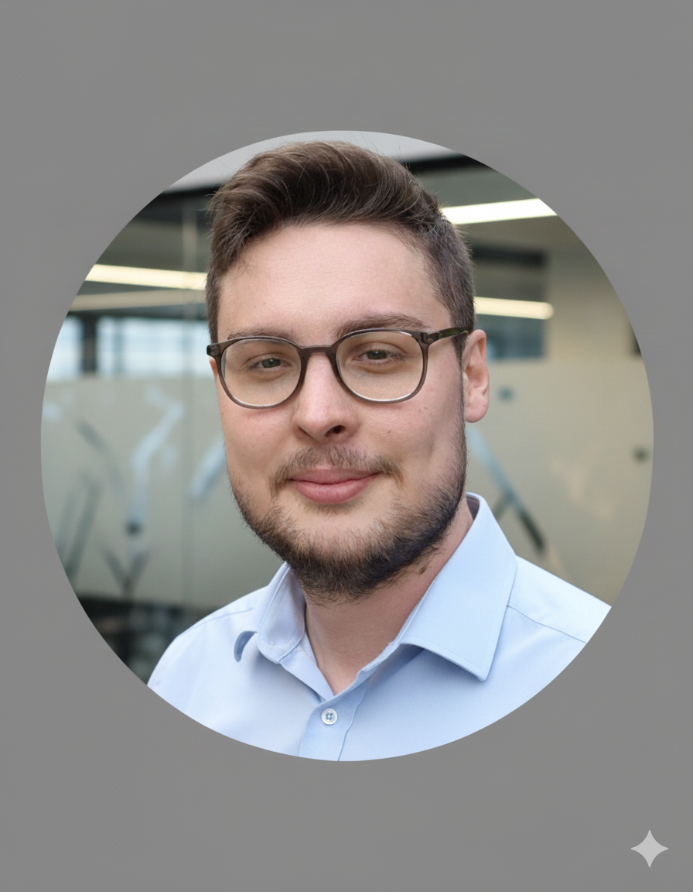

Hakan Kahraman - Bilgisayar Programcısı
Navigasyon Menüsü
Hoş Geldiniz

Merhaba! Ben Hakan Kahraman. İstanbul'da yaşıyorum ve Anadolu Üniversitesi'nde
Bilgisayar Programcılığı eğitimi alıyorum. Makine Mühendisliği lisans diplomama
sahip olup, edindiğim teknik altyapıyı bilişim alanına taşımayı hedefliyorum.
Teknolojiye ve yeniliğe olan tutkumla sürekli öğrenmeye ve kendimi geliştirmeye
odaklanıyorum. Securitas'ta güvenlik görevlisi olarak çalışırken analitik düşünme
ve problem çözme becerilerimi geliştirdim. Daha önce Vodatech'te müşteri hizmetleri
ve teknik destek alanında çalışarak güçlü iletişim becerileri ve CRM deneyimi kazandım.
İstatistikler
- 5+ Yıl Profesyonel Deneyim
- 2 Üniversite Eğitimi
- 8+ Farklı Pozisyon
- 2 Sertifika
Öne Çıkan Özellikler
- Çift Disiplinli Eğitim: Makine Mühendisliği ve Bilgisayar Programcılığı eğitimi ile teknik ve yazılım alanında güçlü altyapı
- Çeşitli Sektör Deneyimi: Güvenlik, müşteri hizmetleri, teknik destek ve üretim alanlarında edinilmiş geniş perspektif
- Problem Çözme Yeteneği: Analitik düşünme ve acil durum yönetimi konusunda kanıtlanmış beceriler
- İletişim Becerileri: CRM sistemleri kullanımı ve 7/24 müşteri desteği deneyimi
- Sürekli Öğrenme: Yapay zeka ve yazılım teknolojileri alanında aktif sertifika programları
- Dijital İçerik Üretimi: 2 yıl boyunca Twitch'te topluluk yönetimi ve içerik üretimi deneyimi
Hedefim: Mühendislik ve bilgisayar bilimleri alanında profesyonel olarak ilerlemek
ve teknoloji dünyasına değer katmaktır.